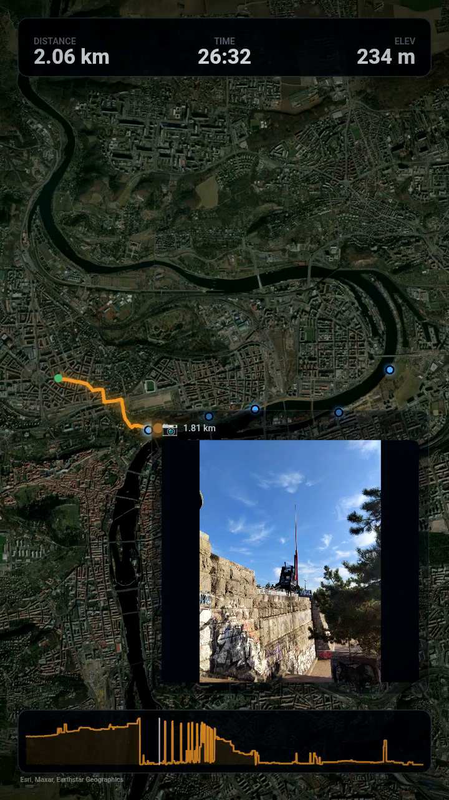

Your runs, routes and rides, hidden as the secrets of an ancient forest.
Perun is a private GPS tracker for running, hiking and cycling. It runs on Android and on Basecamp (desktop), and the two sync directly over Logos: no account and no server of ours in between.
Live map, splits, pace and elevation: the detail you want from a tracker, without handing your movements to anyone.
Run, trail, walk, hike, ride and MTB. Live map, per-km splits, pace and elevation, with auto-pause at red lights. Recording continues with the screen off. A rolling median filter removes GPS altitude spikes, so elevation gain is believable.
Pin a text note, photo or voice note to a point on the run, then edit or delete it later. Annotations sync to Basecamp, where you can see the photos and play the voice notes.
Scrub a replay along the route, or export an MP4 replay video (hardware H.264) in 1:1, 16:9 or 9:16. Your photos and voice notes appear in it. It is rendered on the phone, with no upload.
Export any run as standard GPX (with its sport type) for Strava, Garmin or your own archive. You can also share a summary image, and hide the map first if you don't want to reveal where you were.
Perun Analytics on Basecamp gives a bigger screen for every synced run: splits, elevation, route map, annotations and replay, plus trends, weekly distance and personal bests. You can export GPX or save an image from there too.
By default Perun uses the phone's shared Loam node, which serves all your Logos apps. Without Loam, it runs its own node. Recording never needs a network; you sync when you're ready.




The app draws your route across the map and brings up your photos and voice notes as the dot passes them. It renders the video on the phone and saves it as MP4. The widget below is a simplified preview of the export options, not a screenshot. The video at the top of the page is the real thing.
With basemap None, the video renders fully offline on a plain background. Streets and Satellite download map tiles from OpenStreetMap and Esri ArcGIS while rendering, so those servers see which area you requested. The video itself is never uploaded. A paused stretch of the ride is drawn as a dashed bridge, so the video stays true to what happened.
There's no account. Your phone and your Basecamp share one secret, and everything Perun sends is sealed with keys derived from it.
What is yours should stay yours — and what comes for it should be met with thunder.
Perun is the Slavic god of thunder and the storm — sky-father, lord of the sacred oak, keeper of order. He rides the heavens in a chariot of fire, and in his hand is the axe of lightning that always returns to him once thrown.
His eternal adversary is Veles, the horned serpent who lives among the roots of the world. Veles slips up from the dark to steal — cattle, waters, people — and drag them down to hoard where no light reaches. Each time, Perun hunts him across the sky and strikes, splitting oak and stone, until what was taken is returned. Then the rain falls, and the world is set right.
It is an old story about a simple idea, and it stands guard over the Dark Forest — the deep, unmapped place where a thing can stay hidden and safe.
Today the serpent wears a different face. Modern trackers take your movements, your routes, your home, and hoard them in databases you will never see. Perun takes the old bargain back. Your runs stay on your own devices, sealed with a key only they hold.
The phone records the runs and the desktop analyses them. They find each other over Logos.
https://apps.vpavlin.xyz/logos-repo.json
Current: Android 1.15.44 · perun_analytics 0.8.3 · perun_core 0.9.7